Collection · wide-shot ceiling correction
Walk the updated connected rooms · Previous frame and architecture comparisons
WASD to walk; Space resets; 2 opens the European gallery,3 the French gallery. This pass corrects the omitted flat medieval and Renaissance ceilings. Existing Muse plaster is reused on low polygon slabs, included in the native lighting bake. At eye level the ceilings are visible; above3.4m they hide with their baked copies to keep the walking camera clear. Heights3.5/4.25m are provisional.
 Before: the missing room ceiling exposed the unrelated Hall skylight above the medieval portal.
Before: the missing room ceiling exposed the unrelated Hall skylight above the medieval portal.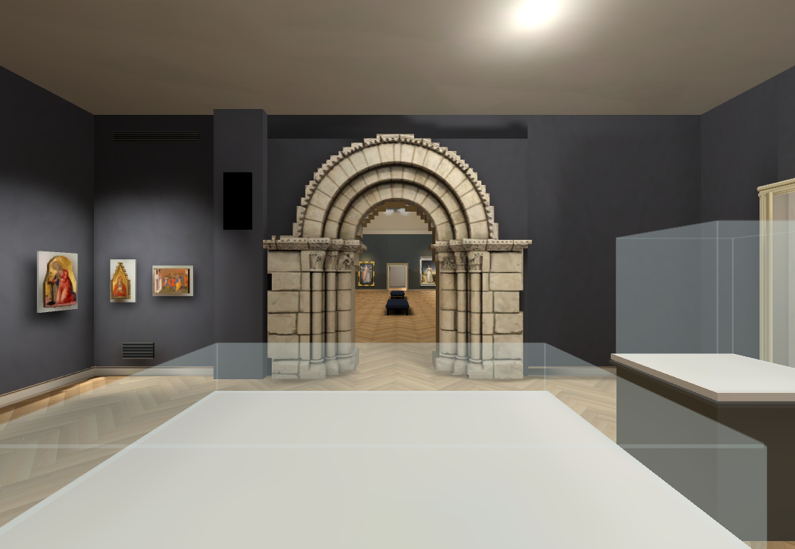
After: native baked eye-level wide, with a flat pale ceiling. The actual Hall remains visible through the portal. Track positions, grille, east fragment and proportions remain unfinished.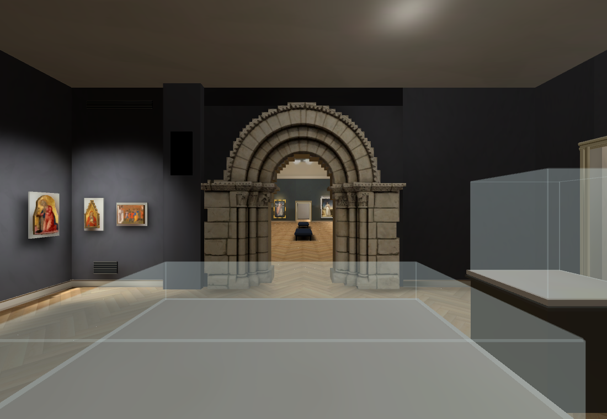
Rejected initial ceiling bake: room fill became too dark. The large fill emitters overlapped the new slabs.Revised neutral room fill, with smaller emitters below the ceilings. Brighter portal and floor; exact source lighting and fixture layout remain provisional.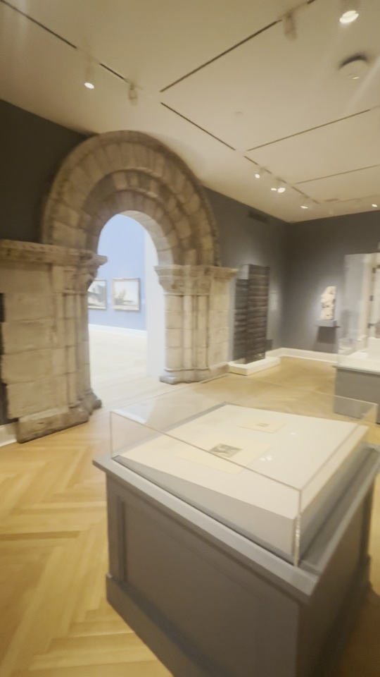
IMG_6382 88.75s: flat ceiling, multiple tracks and spotlights; iron grille right of the portal and a stone fragment near the stair door.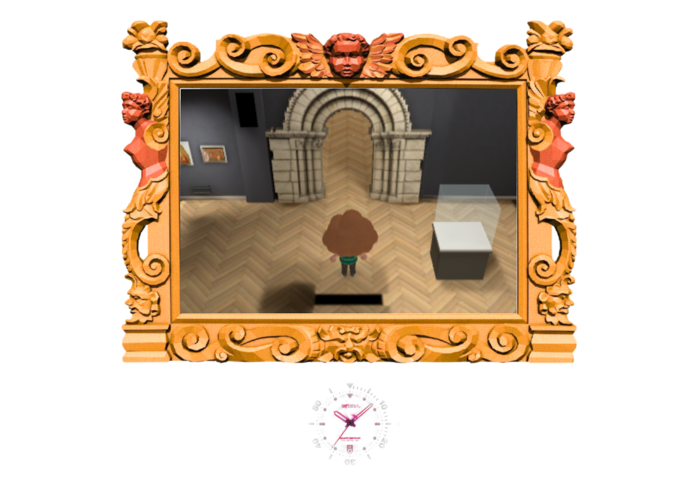
Actual elevated walking camera: ceiling cutaway keeps the visitor and route visible. This is presentation proof, not source geometry acceptance.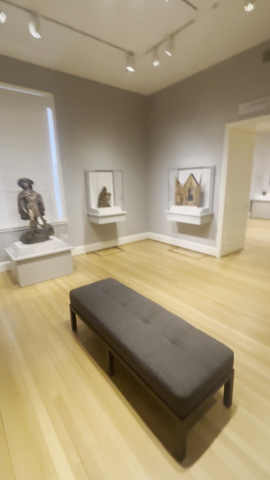
IMG_6383 62.25s: pale flat ceiling and track lighting over the bench, shutters, display cases and European doorway.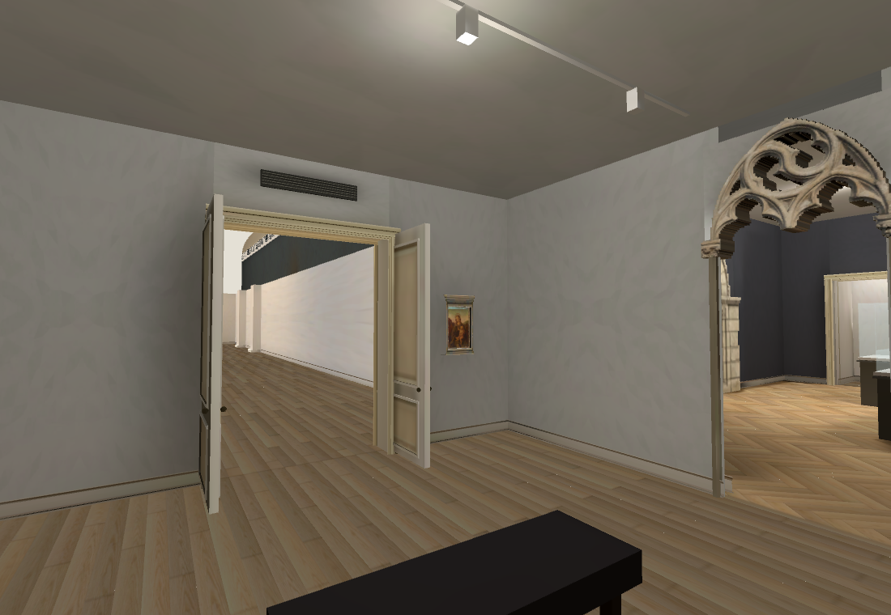
Current native baked reciprocal wide: flat ceiling retained; source objects and precise layout still incomplete.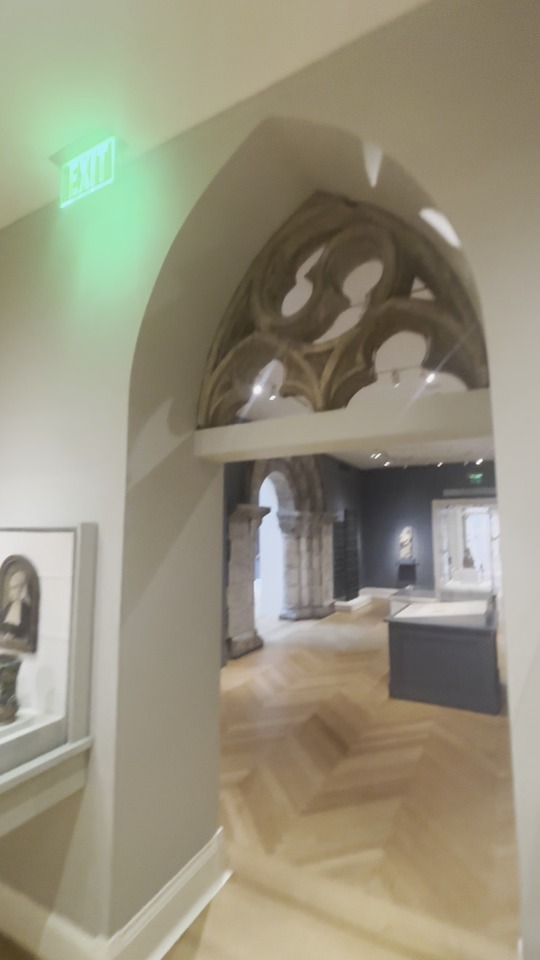
IMG_6383 2.25s looking through tracery toward the medieval portal: reciprocal room connection visible.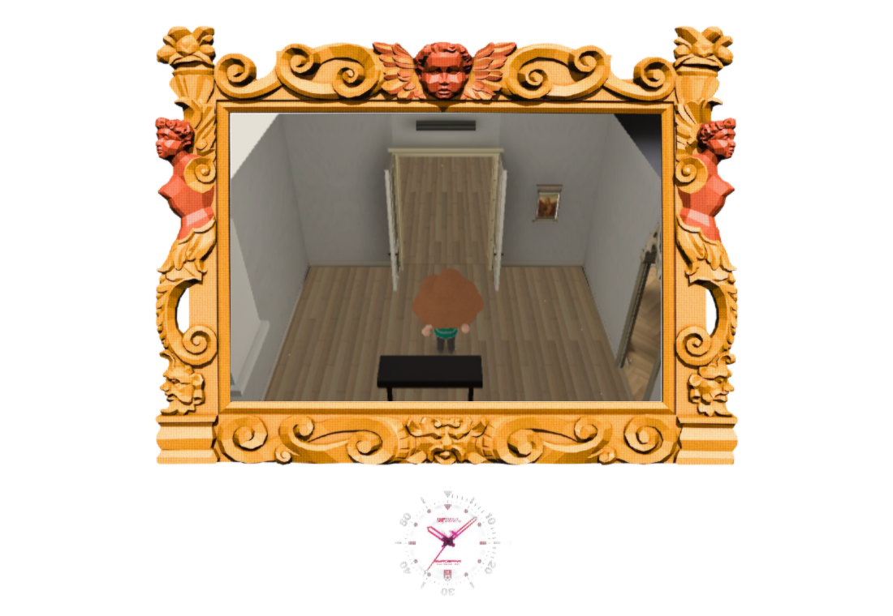
Elevated Renaissance walking camera remains open after the ceiling correction.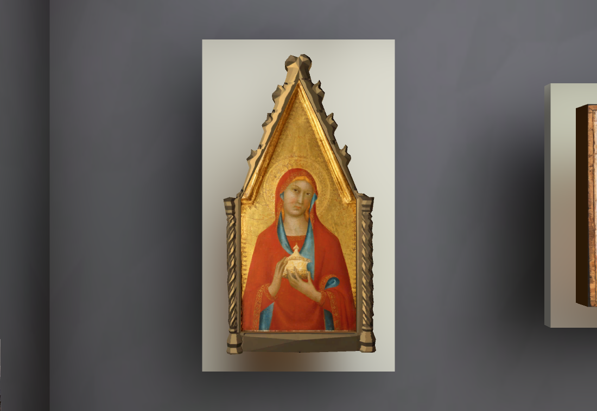
Previously fitted Muse Magdalene frame and separate authentic painted panel retained.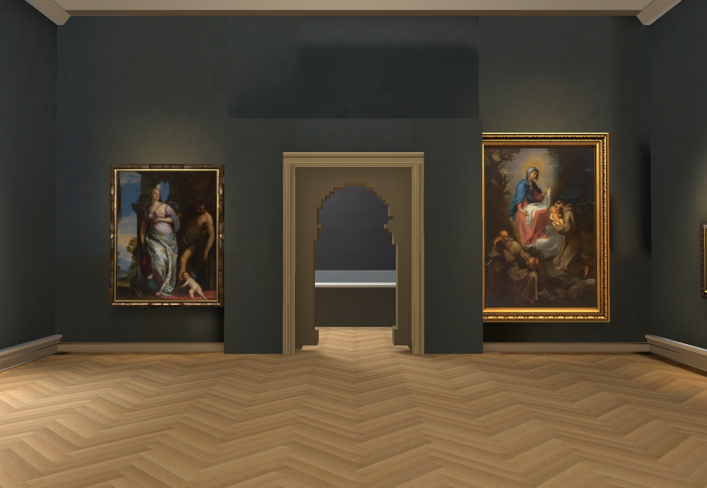
Existing Main Hall presentation and23 verified paintings retained. Source grille plane, manually straightened for inspection only; aspect and metres unverified. Seven scroll columns observed.
Source grille plane, manually straightened for inspection only; aspect and metres unverified. Seven scroll columns observed. Single Muse trial,$0.01: eight columns and other pattern differences. Rejected for direct installation, retained for material/shape fitting; not an accepted museum asset.
Single Muse trial,$0.01: eight columns and other pattern differences. Rejected for direct installation, retained for material/shape fitting; not an accepted museum asset.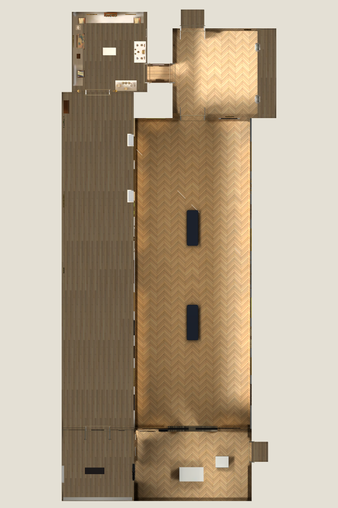
Connected room circuit overview with ceilings hidden. Room metres and placement are provisional; this is not a verified full museum map.RTX4070SUPER Chrome154/154 checks and real keyboard round trip,errors[],p9530.30ms.801 native baked surfaces; eye-level/elevated assertions verify both authored ceilings and baked copies. Owning Shell46/50,4 failures retained. scripts/check.sh and git diff --check pass. No new native performance claim;60fps target is unresolved.
Existing Muse plaster reused. One$0.01 OpenRouter Muse grille pass: source7 columns vs generated8, rejected for direct installation; no blind retry. Cumulative$0.75 actual/$0.76 conservative. Heartbeat disabled; sole main worker. Full reconstruction remains unfinished: source-fitted room/door/object positions, tracks and lighting, remaining sculpture/case contents, stairs, auditorium and modern gallery. Next refine medieval grille/east-wall/stair assets and widen reciprocal placement checks.
Camera/ceiling checks · Source findings and uncertainties · Browser report